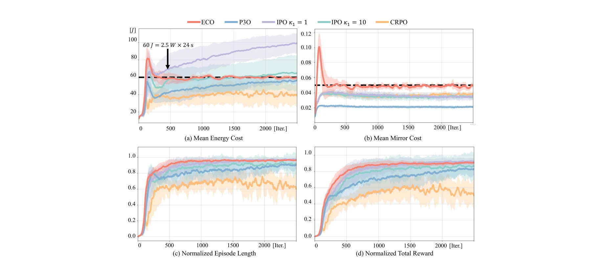
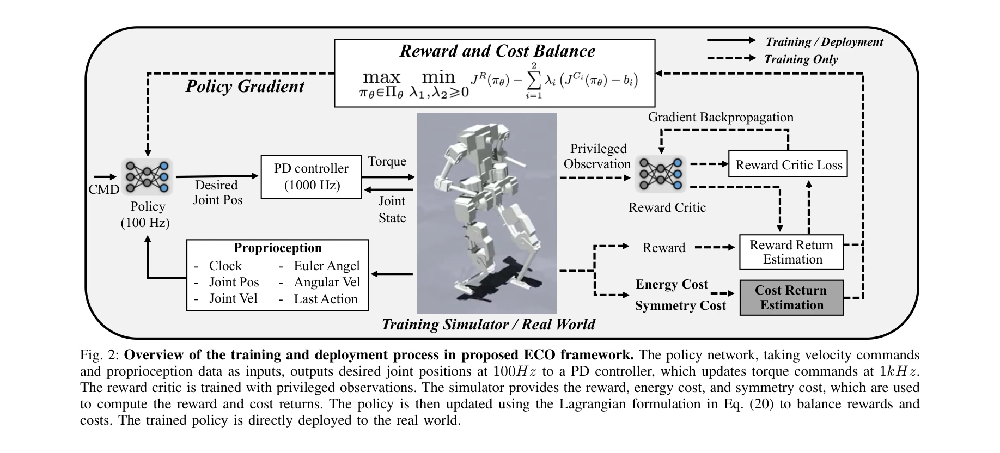

Essence

Fig. 1: Comparison between the proposed constrained RL frame-
ECO는 에너지 소비를 보상 함수의 가중치가 아닌 명시적 부등식 제약 조건으로 reformulate한 constrained RL 프레임워크로, 휴머노이드 로봇의 에너지 효율적 보행을 달성한다.
저자: Weidong Huang, Jingwen Zhang, Jiongye Li, Shibowen Zhang, Jiayang Wu, Jiayi Wang, Hangxin Liu, Yaodong Yang, Yao Su | 날짜: 2026-02-06 | URL: https://arxiv.org/abs/2602.06445
Fig. 1: Comparison between the proposed constrained RL frame-
ECO는 에너지 소비를 보상 함수의 가중치가 아닌 명시적 부등식 제약 조건으로 reformulate한 constrained RL 프레임워크로, 휴머노이드 로봇의 에너지 효율적 보행을 달성한다.

Fig. 3: Comparison of training metrics for ECO, P3O, IPO, and CRPO. The energy consumption and mirror reference motion t

Fig. 2: Overview of the training and deployment process in proposed ECO framework. The policy network, taking velocity c
총평: ECO는 에너지 최적화를 constrained RL로 reformulate한 novel한 접근법으로 휴머노이드 보행의 에너지 효율성에서 획기적 성과를 달성했으며, 실제 로봇 플랫폼 검증과 constrained RL에 대한 실증적 분석은 로봇 공학 및 최적 제어 커뮤니티에 중대한 기여를 한다.